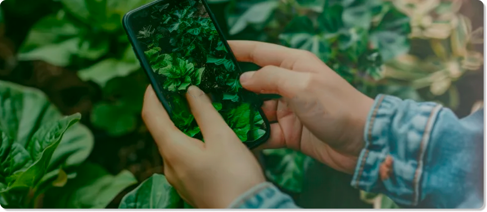
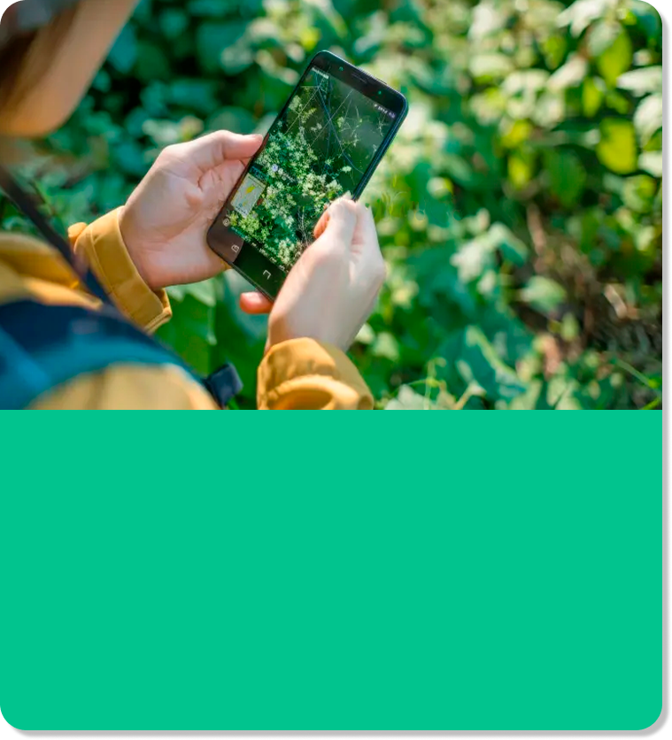

Sube una foto de tu planta
Nuestro sistema de IA analizará la imagen y detectará posibles problemas
Arrastra tu imagen aquí
o haz clic para seleccionar
Consejos para mejores resultados:
- ✓ Foto con buena iluminación natural
- ✓ Enfoque claro en las hojas afectadas
- ✓ Evita sombras y reflejos
Diagnósticos Recientes
Ver todos →

Suculenta Echeveria
✓ Saludable
Hace 2 días

Ficus Lyrata
⚠️ Requiere atención
Hace 5 días